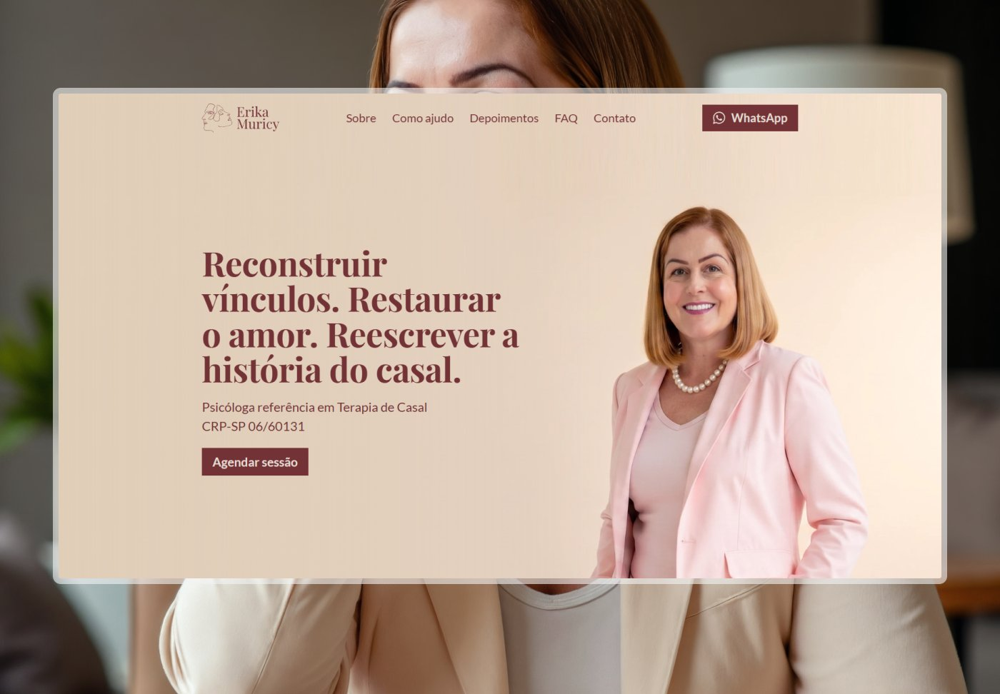
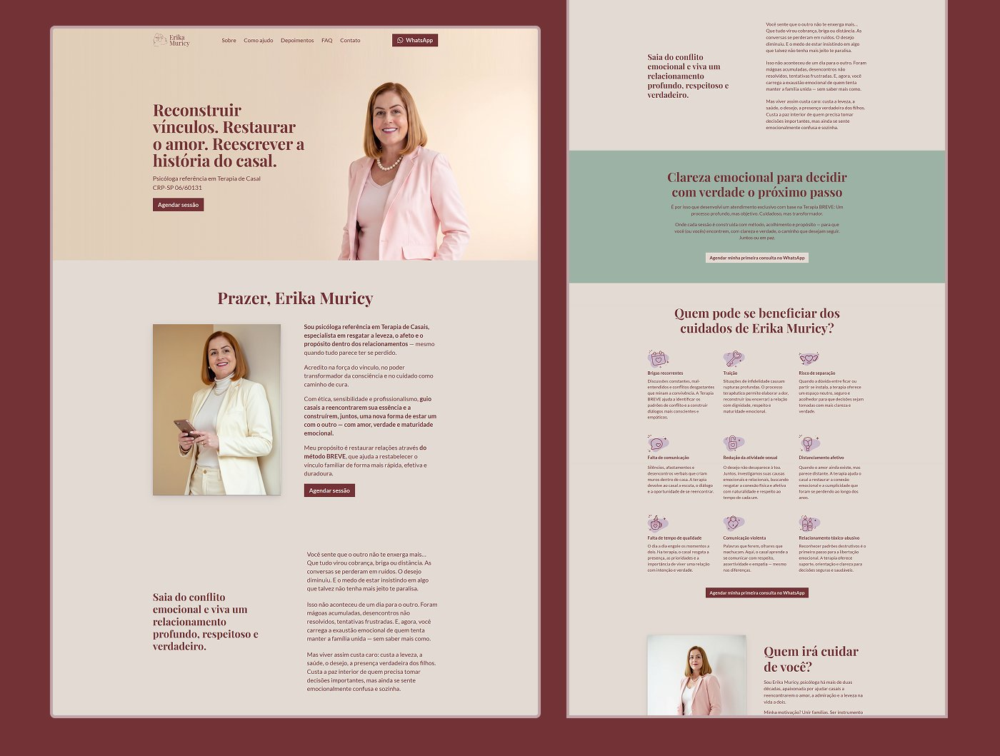
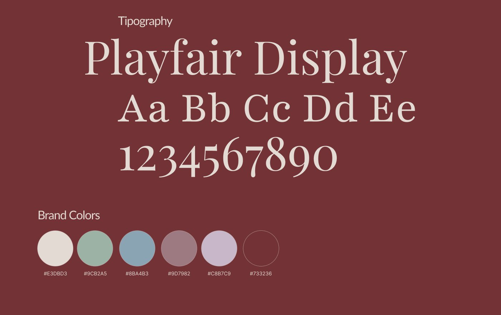
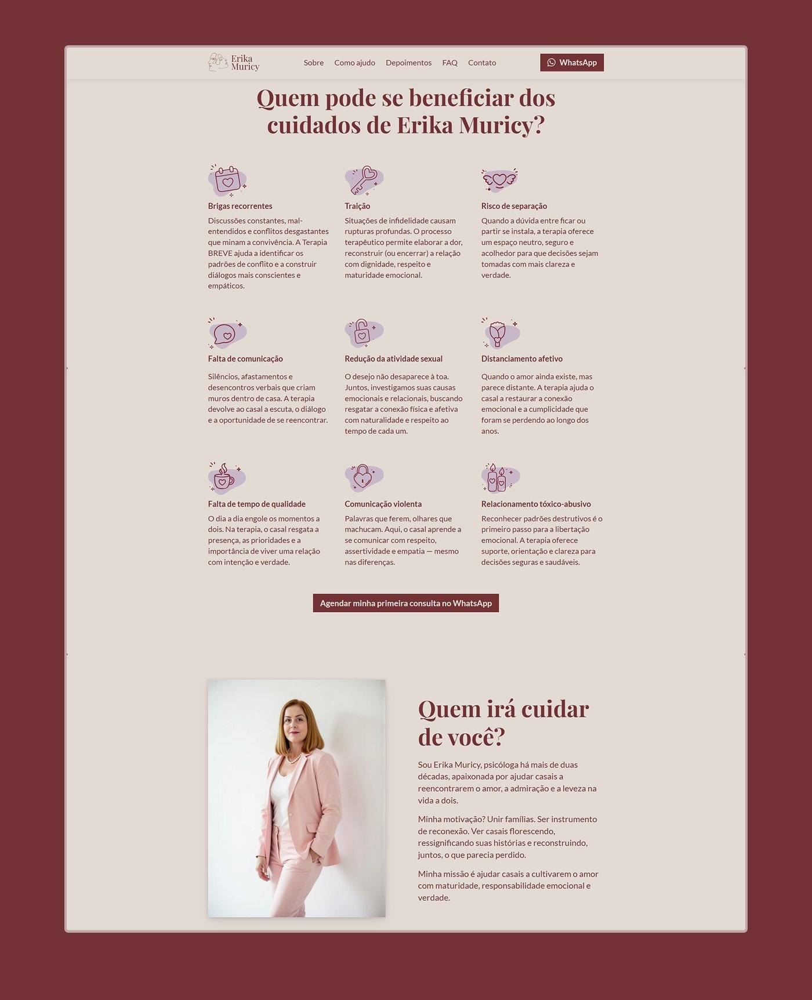
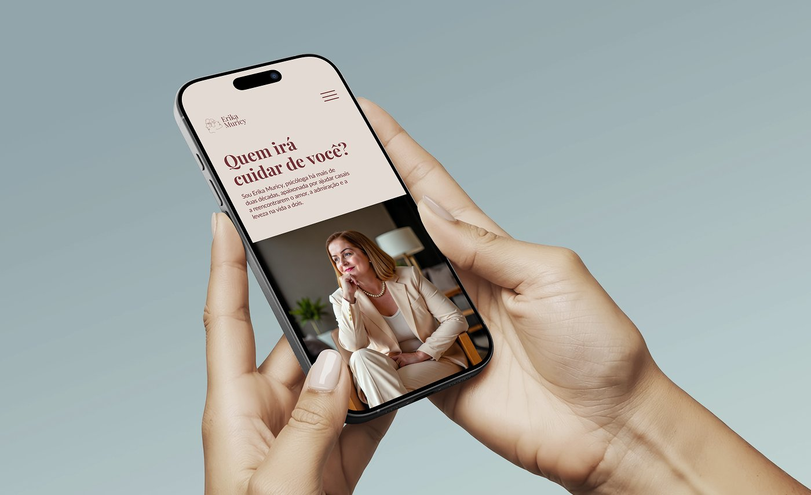
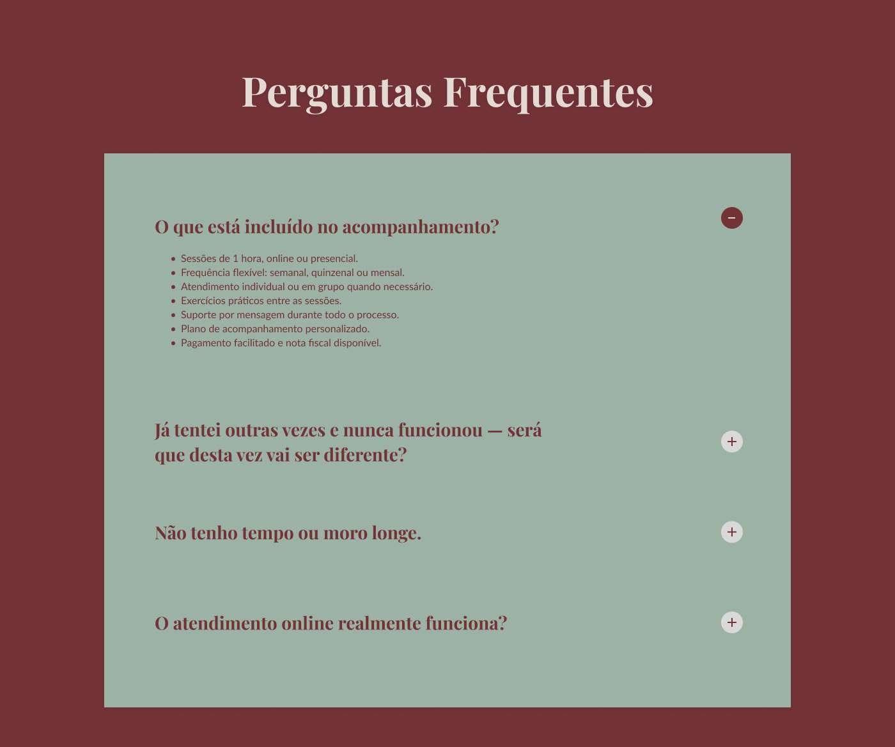

Website Erika Muricy
Erika Muricy é psicóloga e terapeuta de casais, com mais de 30 anos de experiência ajudando pessoas a reconstruírem seus relacionamentos e restabelecerem vínculos de amor, carinho e conexão.
O projeto teve como objetivo transformar sua presença digital em uma experiência mais clara, acolhedora e estratégica, capaz de comunicar sua autoridade e conduzir o visitante até a decisão de buscar ajuda.
O principal desafio era partir de um site desatualizado e de uma comunicação que precisava ser completamente reorganizada.
Antes de pensar no visual, foi necessário estruturar uma nova linha de ação para a página. Desenvolvi e validei a copy utilizando meu agente de IA especializado em copywriting, refinando cada etapa junto à especialista antes de iniciar o design.
Com a estratégia definida, o projeto passou a ter uma direção clara: comunicar a experiência da Erika, gerar identificação com o problema do público e conduzir o visitante para a conversão.
- Desenvolvimento e validação de toda a copy;
- Geração das imagens e assets utilizando IA;
- Construção da landing page no Figma, utilizando Auto Layout;
- Implementação completa utilizando Claude Code, diretamente no domínio público.
O resultado foi uma landing page mais clara, estratégica e preparada para transformar tráfego em oportunidades.





